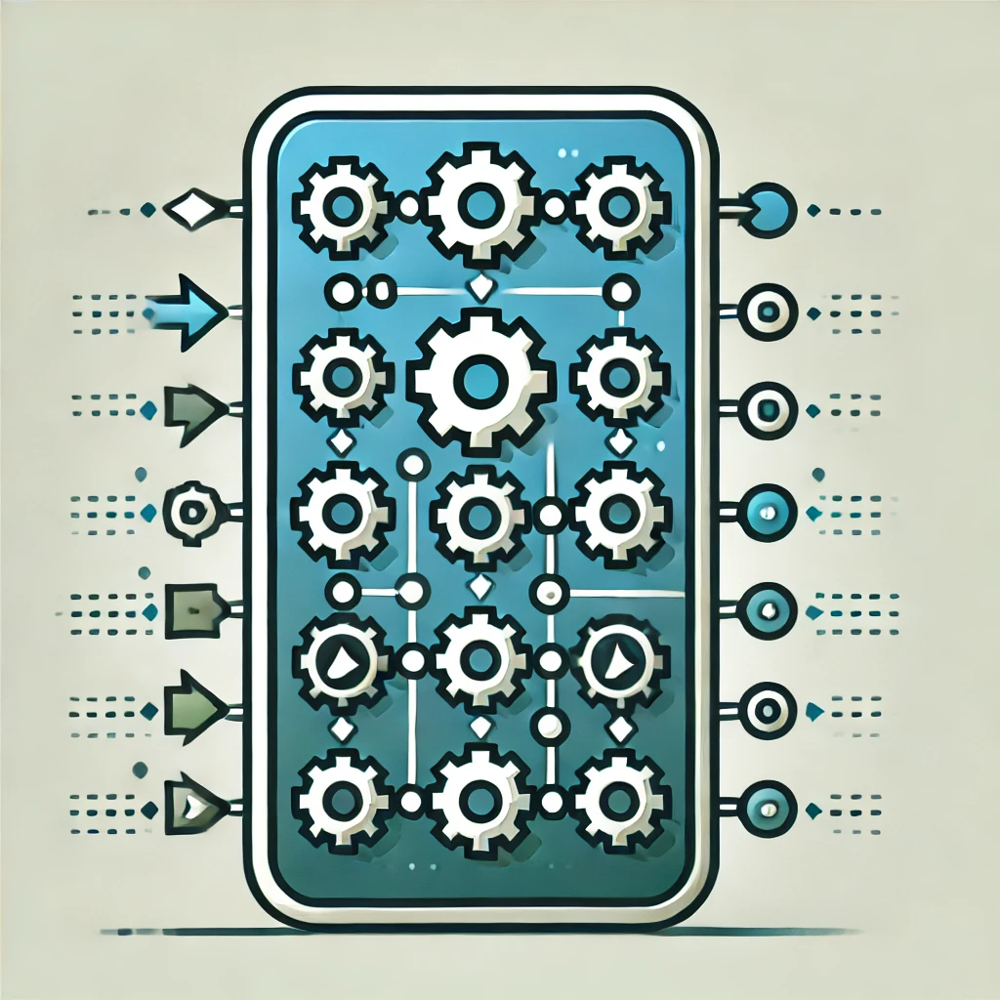

Project 1: Automated Deployment Pipeline
In this project, I built an automated CI/CD pipeline to streamline the process of software deployment. The goal was to enhance efficiency and reduce errors during deployment by automating various stages of code integration, testing, and delivery.
Key tools used in this project include Jenkins for continuous integration, Docker for containerization, and Terraform for infrastructure automation. This pipeline was designed to automatically deploy code changes to staging and production environments, ensuring a smoother development workflow.
The project highlights the following:
- Setup of Jenkins pipeline for automated builds and testing.
- Integration of Docker for consistent application environments.
- Terraform used to manage infrastructure as code.
- Automated deployment to staging and production environments.